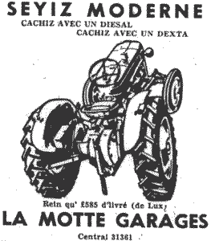

Quand Laïesse Ernon perdit sa jument l'année passée il 'tait bain gêné comment qu'i' s'en allait s'graie pour les tchéthues ch't hivé.
Il 'tait bain décidé de n'r'acater pas un aût'e chéva au prix qu'ils ont 'té à chu dernyi. Sa Cocotte li avait couôté vingt-siex louis à la faithe de Gâvray i' y a vingt ans et che n'tait bain seux pas li qui s'en allait payi des chent à chent chinquante louis pour un malheutheux bidet de tchi qu'il en fallait deux pour en faithe iune comme la Cocotte.
I' suivi toutes les vendues le S'tembre passé pour tâchi de s'suiter mais jamais i' n'pu trouver rain à san gout ni à san prix, ch'est pourtchi il 'tait à peu-près décidé de se r'tither d'la fermethie tout-à-fait et d'bazarder san butin pour se mettre à acater des patates sus l'Weighbridge dans l'êté et aller canvasser pour du guano dans l'hivé comme tant d'fermiers ont fait d'vant li.
Justement comme il avait décidé avec sa femme que che s'sait Horace Perchard qui f'thait sa vendue, san biaufrèthe vint passer un Dimanche siez-li. Quand i' ouï qu'Laïesse était sus l'point de louer sa ferme car i'n'avait pas de ch'va, i' li dit de n'aller pas faithe une patheille bêtise et finit par le persuader qu'i' pouvait faithe tout san travas à bain miyeu marchi avec un “Tractor.” Il 'tait à d'la maintchi ingénieux, li, et dès qu'il en aithait acaté iun, i'vaindrait li montrer comment l'cachi.
V'là qui décidi Laïesse et il ne fit v'nin iun d'Angliéterre.
Quand sa femme ouï l'prix qu'il en avait payi ou vint quâsi folle, mais san frèthe lus explitchi qu'i pouvait s'gagni dans un an. “V'là tchi n'couôte pas à maintenin!” qu'i' lus dit, “quand ous êtes finis d'une job ou batchiz chenna souos un shed et ches fini jusqu'à la prechaine feis. I'n'mange ni fain ni avaine et i'n'est pas besoin tous les siers d'aller l'soigni pour la nièt. Pas d'termethie d'tchéthues avec les vaisins, tu fais tan travas quand tu veurs et comme tu veurs et à la maintchi miyeu marchi.”
I'failli achetu acater un stock de pétrole, mais Laïesse a fait accraithe à sa femme que ch'est la maison qui li a vendu la machine qui la fournie pour rain.
Opprès une douzaine de leçons Laïesse a réussi à maîtrisi les diffitchultés du manoeuvrement de san nouviau ch'va. Il a griffonné et brîsi toute sa terre et a même quémenchi à touâner pour des patates.
San vaisin, le vier Cliément d'Caen, qu'est un vier conservateur si y'en a iun, s'en est tréjous motchi. I'n'crait pas à toutes ches nouvelles inventions là, li. Si il avait s'n idé i' touan'nait oquo avec deux tchéthues, treis ch'vaux sus la p'tite et huit sus a grande, et comme i'dit, “Pas d'la maintchi tant de pilvâquethie comme Mess Ernon fait avec san “Steam Roller.”
L'aut'e jour quand Laïesse était à touâner, la tchuthiosité poussi Maît'e Cliém. à monter par sus l'fossé pour vaie comment que v'là tchi faisait.
 Quand Laïesse le vit v'nin, i'dit à li-même, “Tch'est qu'chu vier senteur-là s'en vaint faithe ichin?”
Quand Laïesse le vit v'nin, i'dit à li-même, “Tch'est qu'chu vier senteur-là s'en vaint faithe ichin?”
Mais quand l'bouonhomme appréchi i' li d'mandi comme chenna.
“Eh bain Maît'e Cliém, tch'est qu'ou criyiz d'note travas?”
“Pas tant piéthe, pas tant piéthe,” se fit l'vi.
“Eh bain, empoigniz la tchéthue deustrais tours, don.”
Le bouonhomme se mins dans les manchots mais i' dêcouvri bain vite que v'là qu'allait pus vite qu'i' n'avait 'té accouôtumé avec ses ch'vaux et dans tchiques minutes il 'tait tout essoufflié. Quand i' vint à ramonter l'aut'e côté du clios, le vent v'nait d'l'avant et i' fut enveloppé dans un nuage de fumée qui l'fit toûtre comme un loup-mathin. Ch'tait les “fumes” de pétrole, et quand Maîte Cliém arrivi à la foyethe il 'tait à la maintchi asphyxié.
“Attrapes ta sacrée tchéthue!”i' dit à Laïesse, “Et ne m'pâlez pas d'ches înventiôns-là! Je sis à peu près empouaisonné, gâsdé-ouelle! Je n'voudrais pas vaie ch't ôti-là siez-nous quand tu m'touan'nais toute ma terre pour rain! Pouah! Tchille infection!”
Et l'bouonhomme s'en r'fut siez-li compliètment dégouôté.
Quand ou le r'verrez d'mandez-li tch'est qu'i'pense des “Tractors.”
Caouain
Les Chroniques de Jersey 7/1/1922
Viyiz étout: